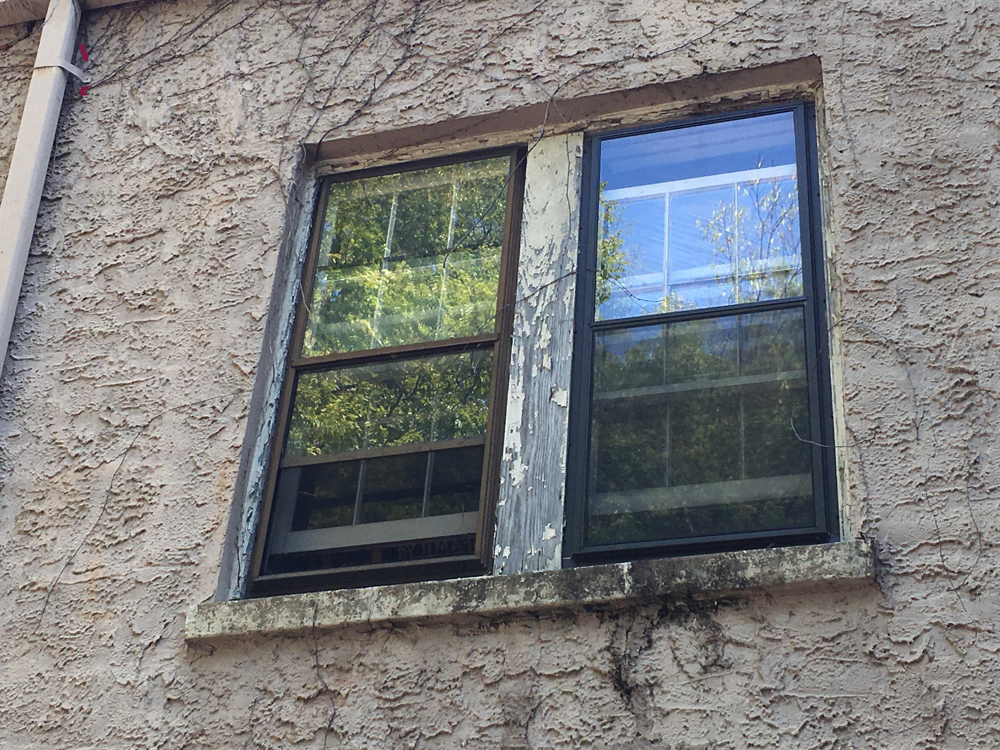
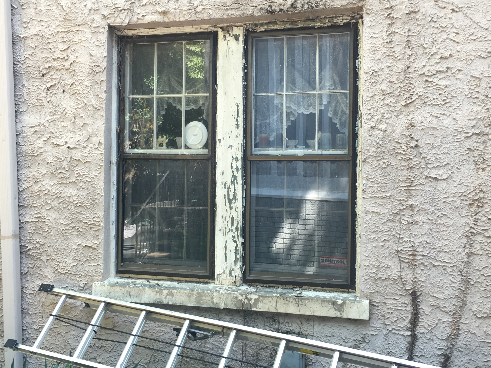
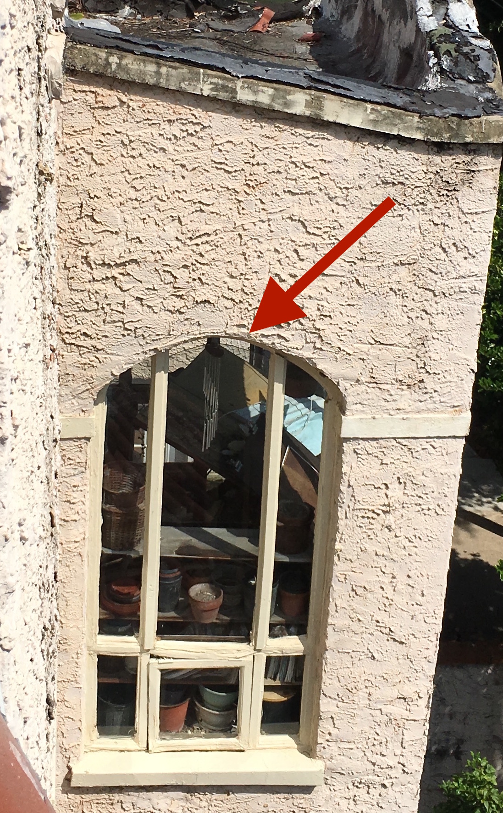
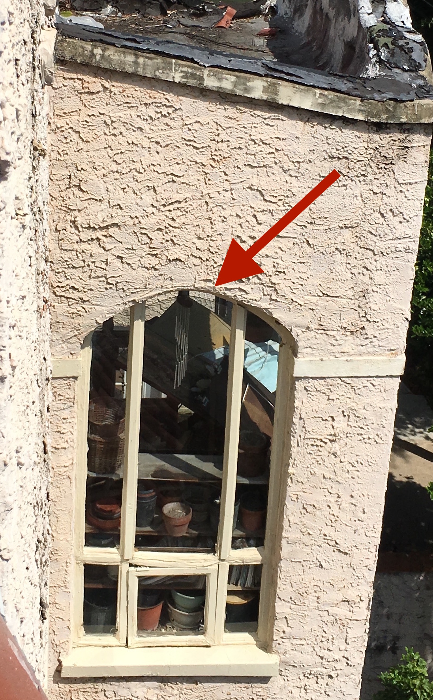

Vacant Property
962 Charles Allen Dr, Atlanta Ga 30309
For the past 5 years, 962 Charles Allen Dr has ben vacant, abandoned, continuously deteriorating. The first reported incident of this was in 2012 and it has since been reported nearly every year. This property damages other properties around it, allows pests and vermin into the connected homes, and poses a serious safety risk with glass windows close to falling out of the frames.
Details
Each individual item is documented in the pictures below:
- Second story back windows open for several years, frames rotting out
- Hvac condensor inoperable for several years
- Crawl space vent open allowing rodents to enter premises
- Gutters in disrepair and overflowing causing water damage on back of house
- Roof in state of disrepair with large holes allowing water to flow freely into structure
- Debris and junk cluttered on the roof
- Front sunroom window dangerously close to falling out of frame from water damage
- Front second story window open for several years, frame rotting out
- Front porch overgrown
Photos
Second story back windows open for several years, frames rotting out

First story back window frames rotting out

Hvac condensor inoperable for several years, crawl space open and accessible to pests
 Gutters in disrepair and overflowing causing water damage on back of house
Gutters in disrepair and overflowing causing water damage on back of house
 Roof in state of disrepair with large holes allowing water to flow freely into structure
Roof in state of disrepair with large holes allowing water to flow freely into structure
 Debris and junk clutered on the roof
Debris and junk clutered on the roof
 Front sunroom window dangerously close to falling out of frame from water damage
Front sunroom window dangerously close to falling out of frame from water damage
 Look closely, the water damage and interior leaning against is causing a large glass pane to be very close to failing out

That glass pane sits directly above a neighbor's front door
Look closely, the water damage and interior leaning against is causing a large glass pane to be very close to failing out

That glass pane sits directly above a neighbor's front door
 Overgrown front of the house
Overgrown front of the house
 Second story windows open for several years
Second story windows open for several years